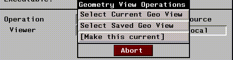
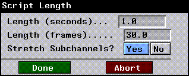

[N-World Contents] [Book Contents] [Prev] [Next] [Index]
Animating Objects
In this chapter you'll learn how to build a simple animated logo, displaying call letters spinning around a planet.
In this Chapter
You'll learn about:
This chapter describes how to animate superior and inferior objects and how to work with changing objects' origins. (This should help you better understand the difference between a body and an object).
Setting Up Your Animation
When you're building an animation, even a simple one, it's a good idea to spend a little time before you start, figuring out exactly what you want to do.
You need to determine which types of elements are going to be animated, how you want them to move (or change), then finally, how to set those objects up properly so that they behave in the manner you expect when you animate them.
In this example, suppose you've been given the task of animating a set of call letters, like those for a radio or television station, orbiting around a globe.
Creating the Elements
If you're working with 3D objects, then you're going to create your elements in N-Geometry. First, let's create a set of call letters that we're going to animate.
In N-Geometry:
1. (CLICK-L) on GeoMenus>New Object>Text.
- Enter the call letters in the Character(s) text edit box, and select a font using (CLICK-L) on Font>New.
Figure 3.1 Creating text characters in N-Geometry
Your letters should appear in the N-Geometry window:
Figure 3.2 Created text
2. (CLICK-L) on objects in the element sensitivity menu.
- When you create a string of text, the individual letters are grouped as inferior objects to the "word" object group.
Figure 3.3 Selecting the text object
3. (SHIFT-L) on the word object, then (CLICK-M) on Home.
- This makes the origin of all inferior objects (the letters) the same as the superior object (the word):
Figure 3.4 Initializing the home position of the inferior objects
4. (SHIFT-L) on the bodies in the element sensitivity menu.
- Remember that an object consists of a transformation matrix and a body. You transform (rotate, scale, & rotate) objects in N-Geometry.
- Earlier, we worked with our letter objects. Now, we'll modify the letter bodies so that when we rotate the object, we'll see the correct animation.
5. (SHIFT-L) on the letter W, then (CTRL-L) on Axis Move>Z.
- Enter a distance of 15 in the dialog box that appears.

Figure 3.5 Axis Move the body of the letter forward along the Z axis
In order to make a perfect circle, however, we need to line up the center of the letter right over the z axis.
6. Press the "z" hot key to aim the camera along the Z axis.
7. (SHIFT-L) on the letter W, then (CLICK-L) on Axis Move>X.
- Align the letter so that it looks like this:
Figure 3.6 Axis Move the body of the letter so it's aligned over the Z axis
Repeat the process with the other letters so that they're also aligned with the Z axis. Your letters should look something like this when you're done:
Figure 3.7 All letters moved out along the Z axis
8. (SHIFT-L) on the letter N, then (CLICK-M) on Rotate>Y.
- Move the letter until it's a good distance from the W, something like this:
Figure 3.8 Moving the letters out, one by one
- Repeat the process for the other letters, until your word has the correct spacing around the Y axis:
Figure 3.9 The letters in position
9. (CLICK-L) on GeoMenus>New Object>Sphere.
- This sphere will serve as our globe. Your elements should look something like this:
Figure 3.10 The globe and the call letters in place
Building the Script
Initially, you might think that you need a different channel to animate the spinning logo. But if we want to take advantage of the structured hierarchy of the object, we can animate the entire word as a single object.
Animating the Text
As described earlier, the letter objects are inferior objects of the word object; if you want to animate the word rotating around the sphere, you can simply animate the superior word object-any subobjects are animated automatically, using the superior object's transformation matrix.
While you're working with the text, make the Sphere invisible:
10. (CLICK-L) on the Sphere object, then (CLICK-L) on Visibility.
Now, let's animate the text orbiting the globe:
1. In N-Dynamics, (CLICK-L) on File>Create New Script.
- Give it a distinctive name-we'll use call-letters for the sample name in this chapter. When prompted, specify 1 channel for the new script.
2. (CLICK-M) on the channel.
3. (CLICK-L) on the Operation text edit box.
4. (CLICK-L) on Rotation>Y Rotate.
5. (CLICK-L) on the Object text edit box, then (CLICK-L) on the Text object from the list that appears.
6. (CLICK-L) on Do It.
- Now that you've specified the operation to be performed (a rotate around the Y axis), you need to specfy how many degrees the object should rotate.
7. (CLICK-M) on the curve channel under the Y Rotate channel.
8. Enter an end value of 360, then (CLICK-L) on Do It.
9. (CLICK-L) on Animate.
10. (CLICK-L) on Playback.
- The Text object spins 360 degrees around the Y axis:

Figure 3.11 The word object rotates around the Y axis (arrows added for emphasis)
Saving a View in a Script
Proper camera positioning is an important element in setting up an appealing animation. If you don't specifically save a view in the script, the animation will be generated using the camera's current position. To get the same results everytime, you want to save a camera view.
11. Adjust the camera so that you're looking straight at the text object.
- Use the "z" hot key to line the camera up along the Z axis, then rotate the camera around.
Figure 3.12 The word object rotates around the Y axis (arrows added for emphasis)
12. (CLICK-L) on global and fixed-aim in the camera sensitivity menu at the bottom of the N-Geometry window.
13. (CLICK-M) to start the camera, then (HOLD-M) to adjust the camera around the Z axis.
- Rotate the camera until your text looks like this:
Figure 3.13 Changing the camera angle
14. In N-Dynamics, move the mouse over the black title bar with the script name, and press the "s" hot key.
- Another channel is added to the bottom of the script.
15. (CLICK-M) on the channel, then (CLICK-L) on the Operation text edit box.
16. (CLICK-L) on Camera>Set View.
Figure 3.14 The Set View operation
17. (CLICK-L) on the text edit box under the Source label.
- The following menu is displayed:
Figure 3.15 Selecting where the view is to come from
18. (CLICK-L) on Local Value.
- A default value appears in the Viewer text edit box.
19. (CLICK-L) on the L text edit box, then (CLICK-L) on Select Current Geo View.

Figure 3.16 Selecting the current view from N-Geometry
- The value in the Viewer text edit box is update to use the camera's current position.
Figure 3.17 Updated camera position
20. (CLICK-L) on Do It to save the camera view.
- Now, even if you move the camera, it will reset to the correct position when you animate the script.
21. (CLICK-R) on the script's title bar, and rearrange the channels so that the Set View channel comes first.
Making the Planet Visible
Finally, we need to make the planet visible.
22. Move the mouse over the script title bar and press the "s" hot key.
- A Make Visible channel appears at the bottom of the script (this is the default action for a channel).
23. (CLICK-M) on the Make Visible channel, then (CLICK-L) on the Object text edit box.
24. (CLICK-L) on the Sphere object from the object list that appears.
Animating a Single Frame
Now, rather than animating the whole thing again, let's test animate a single frame.
25. Move the cursor over the frame range area in N-Dynamics.
- The frame range area shows the time box and the frame box:
Figure 3.18 The frame range area contains the time box and frame box
26. (CLICK-L) at any point in the frame range area.
- If you move the cursor over the frame box, you know you're in the right place.
- Note. A small green tick mark appears in the frame range area over the last animated frame; this serves as a handy reference when you're making changes to a script and want to go back and animate the same frame to see the affect of any changes you may have made to a script.
Your N-Geometry window should look something like this:

Figure 3.19 Elements in their default position
The globe is a little bit below our letters; this is because the default center for a globe is its midpoint, while the default center for a letter (or word) is its lower left anchor point.
27. (CLICK-L) on bodies in the element sensitivity menu.
28. (SHIFT-L) on the sphere, then (CLICK-L) on Axis Move>Y.
- Adjust the sphere until it's lined up with the text:
Figure 3.20 Aligning the elements
29. Save your script.
Changing the Script Length
Suppose you're now happy with the way your animation looks, but find out that instead of a one-second piece, you need a three-second piece. You need to change the length of your script.
30. (CLICK-L) on the frame range button in the lower right corner of the script editor (shown in Figure 3.18).
- The following pop-up appears:
Figure 3.21 Changing the script length
31. (CLICK-L) on Change Script Length.
- The following dialog appears:

Figure 3.22 Specify time or frames
32. Enter a new length of 3 seconds, and press RETURN.
- The new script length (in frames) is also displayed. You can change either of these values; each is updated automatically as required.
- Note. Stretch Subchannels is on by default. If set to Yes, any channels in the script are stretched (or squashed) to fit the new script length. If set to No, the script length is changed, but subchannels are not changed. (This is useful if you want to give yourself more frames to work with, but don't necessarily want to change the animation you've already created.)
33. (CLICK-L) on Done.
- The new script length is displayed in the frame range button.
34. (CLICK-L) on Animate.
35. (CLICK-L) on Playback.
- The Text object spins 360 degrees around the Y axis, but this time we've improved the camera angle and increased the length of the animation.
36. Save your script.
Congratulations!
You've created your first complete animation! You've learned a little bit more about working with objects and bodies, saving a view to a script, how to animate a single frame, and how to change the length of your script.
[N-World Contents] [Book Contents] [Prev] [Next] [Index]
 Another fine product from Nichimen documentation!
Another fine product from Nichimen documentation!
Copyright © 1996, Nichimen Graphics Corporation. All rights
reserved.